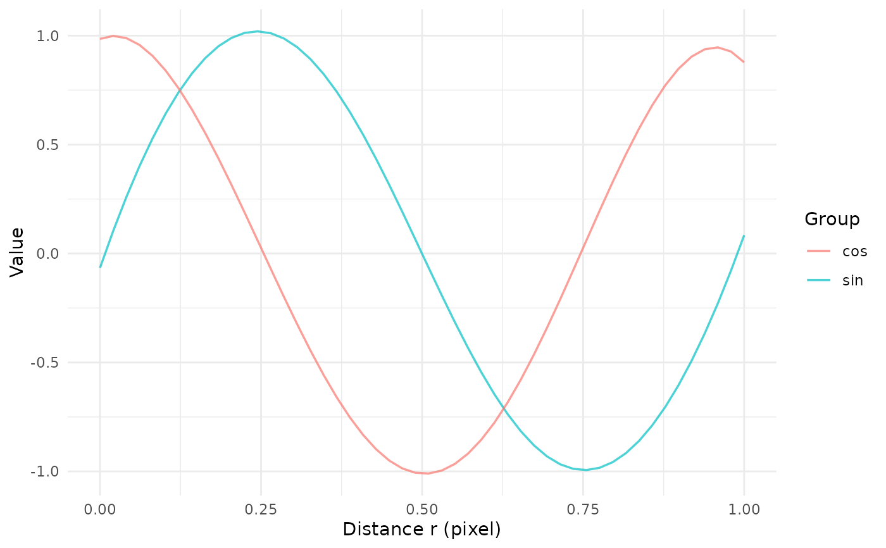

Methods for the objects of class spafun_fd returned by funSmooth().
Usage
# S3 method for class 'spafun_fd'
print(x, ...)
# S3 method for class 'spafun_fd'
as.data.frame(x, row.names = NULL, optional = FALSE, r_eval = NULL, ...)
# S3 method for class 'spafun_fd'
plot(x, y = NULL, groups = NULL, r_eval = NULL, ...)Arguments
- x
A
spafun_fdobject.- ...
Not used.
- row.names, optional
Not used (for compatibility with the generic).
- r_eval
Grid on which the curves are evaluated. If
NULL, the gridx$r.- y
Not used (for compatibility with the generic).
- groups
Optional vector with one group per curve, named after the curves (as
x$fd$fdnames$Sample) or in the same order.
Value
print() returns x invisibly; as.data.frame() a data.frame; plot() a ggplot object.
Details
print()summarises curves, basis, penalty and units.as.data.frame()evaluates the curves on a grid and returns a long table with columnsr,sampleandvalue.plot()draws the curves with ggplot2, optionally coloured by group.
Examples
set.seed(1)
r <- seq(0, 1, length.out = 50)
curves <- data.frame(r_value = r,
A = sin(2 * pi * r) + rnorm(50, sd = 0.1),
B = cos(2 * pi * r) + rnorm(50, sd = 0.1))
res <- funSmooth(curves, verbose = FALSE)
#> Warning: lambda reduced to 259.568955954505 to prevent overflow
#> Warning: lambda reduced to 259.568955954505 to prevent overflow
#> Warning: lambda reduced to 259.568955954505 to prevent overflow
print(res)
#> <spafun_fd> 2 curves
#> r: [0, 1] pixel, 50 points
#> function: Value
#> centered: no
#> basis: B-spline, order 6, 12 basis functions
#> penalty: derivative 4, lambda = 6e-08 (GCV, df = 6.29)
head(as.data.frame(res, r_eval = seq(0, 1, by = 0.1)))
#> r sample value
#> 1 0.0 A -0.065702608
#> 2 0.1 A 0.632051883
#> 3 0.2 A 0.983101048
#> 4 0.3 A 0.960396503
#> 5 0.4 A 0.589219632
#> 6 0.5 A -0.001325807
plot(res, groups = c(A = "sin", B = "cos"))
